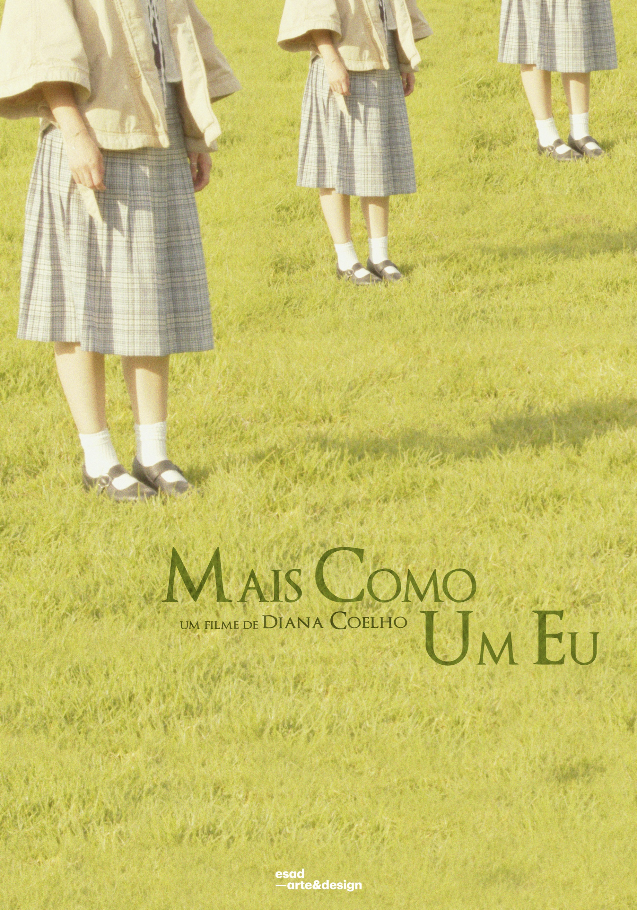

Developed as a final undergraduate project, "Mais Como Um Eu" is a short film that was born from the desire to explore the fusion between art and personal identity. In this work, I take on the challenge of placing myself at the center of the narrative, not only as a creator, but also as an emotional protagonist, reflecting on the limits between the creative self and the intimate self.
The short film proposes a visual and sensorial journey, where cinematographic language is used as a form of internal expression. Through visual metaphors, movement and a more experimental aesthetic approach, I challenged myself to translate complex emotions such as doubt, introspection and self-knowledge into images that speak for themselves.
This project was, above all, an exercise in vulnerability and overcoming. I faced my own creative and emotional barriers, using cinema as a tool for self-reflection and, at the same time, for communicating with the public. "Mais Como Um Eu" represents a remarkable stage in my academic and artistic career, where the creative process was as important as the final result. A work where the personal becomes universal and where art serves as a mirror.


